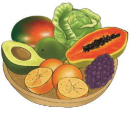
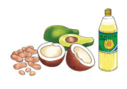
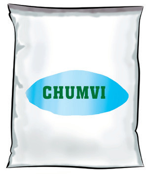
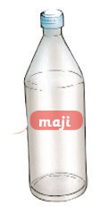

Vyakula vya vitamini

Vyakula vya vitamini hupatikana katika matunda mbalimbali kama vile embe, chungwa na tango. Pia, vitamini hupatikana katika mboga za majani kama vile kabichi na mchicha. Vyakula vya vitamini hulinda mwili usipatwe na magonjwa. Pia, huimarisha mifupa na meno.
Vyakula vya mafuta

Vyakula vya mafuta ni kama samaki, nyama, siagi, karanga, korosho, mawese na alizeti. Vyakula vya mafuta huupa mwili joto.
Maji na madini


Maji husaidia kurekebisha joto la mwili na kuupa mwili maji ya kutosha. Madini huimarisha tishu za mwili na kusaidia mmeng’enyo wa chakula